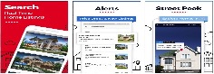

Hybrid Application analysis
What is a hybrid application?
Hybrid "mobile" apps use a combination of native and web app programming to have the features and performance of a native app. The app is downloaded and runs on the mobile device with integrated features similar to those of native and web apps. In essense the difference between a native app and the hybrid can be close to indistinguishable to the user.
At it's heart, the hybrid-mobile app is an application that is written with HTML, CSS, and JavaScript. However, instead of the app being shown within the user's browser, it is run from within its own embedded browser. One key feature is an iOS application would use the WKWebView to display the hybrid app and an Android app would use the WebView element.
Here we consider 2 of the most prominent hybrid app technologies in 2022 - Flutter and React Native. Ironically, Flutter has a user interface which is built on React methodology.
Flutter
Language: Dart
Requires Xcode and macOS device to build & release app
Documentation is well supported
Step by step guide for Android and iOS
Supports cross-platform
No 3D support
Flutter app examples:
twilio
eBay Motors
Realtor.com

React Native
Language: JavaScript
Created by: Facebook
Depends on third-party libraries
Supports cross-platform
Supports 3D
React Native app examples:
Skype
Tesla
Summary
Comparing the hybrid applications of Flutter and React Native we find many similarities that would lead us to believe no clear advantage of one over the other for our business use cases. However, the fact is we currently do not have the resources to hire developers with Dart programming skills, nor the time to wait for current employees to get up to speed.
Considering the top companies who are using React Native, who will continue to invest and support in this flavor of hybrid application development, as well as our reduced costs based on in-house experience, it would be to our benefit to take advantage of its mature coding community, availability of reuseable code, and longevity in the market of web hybrid application development.
Resources
- Flutter
- React Native
- Hybrid app advantages
- Deploying Flutter Apps on iOs
- Build with Flutter for iOS
- Deploying Flutter Apps in App Center
- How Flutter Works
- Why choose Flutter
- Why choose React Native
- Examples of React Native apps
- Hybrid app integration
- Blog comparison of these hybrid applications
- Hybrid Apps in 2022
- Flutter app advantages
- Hybrid app advantages